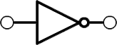

</img>
</img>
</img>
</img>
</img>

<canvas id="canvas">
This text is displayed if your browser does not support HTML5 Canvas.
</canvas>

<style type="text/css">
/* http://meyerweb.com/eric/tools/css/reset/ 
   v2.0 | 20110126
   License: none (public domain)
*/
/* Palette generated by Material Palette - materialpalette.com/teal/cyan */

.dark-primary-color    { background: #00796B; }
.default-primary-color { background: #009688; }
.light-primary-color   { background: #B2DFDB; }
.text-primary-color    { color: #FFFFFF; }
.accent-color          { background: #00BCD4; }
.primary-text-color    { color: #212121; }
.secondary-text-color  { color: #757575; }
.divider-color         { border-color: #BDBDBD; }

html, body, div, span, applet, object, iframe,
h1, h2, h3, h4, h5, h6, p, blockquote, pre,
a, abbr, acronym, address, big, cite, code,
del, dfn, em, img, ins, kbd, q, s, samp,
small, strike, strong, sub, sup, tt, var,
b, u, i, center,
dl, dt, dd, ol, ul, li,
fieldset, form, label, legend,
table, caption, tbody, tfoot, thead, tr, th, td,
article, aside, canvas, details, embed, 
figure, figcaption, footer, header, hgroup, 
menu, nav, output, ruby, section, summary,
time, mark, audio, video {
  margin: 0;
  padding: 0;
  border: 0;
  font-size: 100%;
  font: inherit;
  vertical-align: baseline;
}
/* HTML5 display-role reset for older browsers */
article, aside, details, figcaption, figure, 
footer, header, hgroup, menu, nav, section {
  display: block;
}
body {
  line-height: 1;
}
ol, ul {
  list-style: none;
}
blockquote, q {
  quotes: none;
}
blockquote:before, blockquote:after,
q:before, q:after {
  content: '';
  content: none;
}
table {
  border-collapse: collapse;
  border-spacing: 0;
}
</style>

<script type="text/javascript">
var canvas;  
var ctx;

var dx = 5;
var dy = 3;
var WIDTH = 1000;
var HEIGHT = 500; 
var dragok = false;

var objects = [
  {
    id: "myAnd",
    x: 100, 
    y: 100, 
    type: "and", 
    width: 164, 
    height: 64, 
    inputs: [],
    connected_to: [
      {
        foreign_id: "myOr",
        input_id: "A" 
      }
    ]
  }, {
    id: "myOr", 
    x: 400, 
    y: 300, 
    type: "or", 
    width: 164, 
    height: 64,
    inputs: [
      {
        id: "A",
        x1: 0,
        y1: 10,
        x2: 20,
        y2: 30
      }
    ],
    connected_to: []
  }, {
    id: "myNot",
    x: 100, 
    y: 500, 
    type: "not", 
    width: 164, 
    height: 64, 
    inputs: [],
    connected_to: [
      {
        foreign_id: "myOr",
        input_id: "A" 
      }
    ]
  }
]

function clear() {
  ctx.clearRect(0, 0, WIDTH, HEIGHT);
}

function rect(x,y,w,h) {
  ctx.beginPath();
  ctx.rect(x,y,w,h);
  ctx.closePath();
  ctx.fill();
} 

function elbow(x1, y1, x2, y2) {
  ctx.beginPath();
  ctx.moveTo(x1,y1);
  ctx.lineTo(x1 + ((x2 - x1) / 2),y1);
  ctx.lineTo(x1 + ((x2 - x1) / 2),y2);
  ctx.lineTo(x2,y2);
  ctx.lineWidth = 4;
  ctx.stroke();
}

function drawElbow(from, to) {
  // find the first element
  var fromObject
  var toObject

  for (var i = 0; i < objects.length; i++) {
    var object = objects[i]
    console.log(object.id)
    if(object.id == from) {
      fromObject = object
    }

    if(object.id == to) {
      toObject = object
    }
  }
  // now lets work out the coords
  x1 = fromObject.x + (fromObject.width / 2)
  y1 = fromObject.y

  x2 = toObject.x - (fromObject.width / 2)
  y2 = toObject.y

  elbow(x1, y1, x2, y2)
}

function init() {
  canvas = document.getElementById("canvas");
  canvas.width = document.body.clientWidth; //document.width is obsolete
  canvas.height = document.body.clientHeight;
  WIDTH = canvas.width
  HEIGHT = canvas.height
  ctx = canvas.getContext("2d");
  
  
  return setInterval(draw, 10);
}

function draw() {
  clear();
  ctx.fillStyle = "#ffffff";
  rect(0,0,WIDTH,HEIGHT);

  //drawElbow("myOr", "myNot")
  //drawElbow("myNot", "myAnd")
  // Draw the objects
  for (var i = 0; i < objects.length; i++) {
    var object = objects[i]
    
    if(object.type == "and") {
      var img=document.getElementById("and");
    } else if(object.type == "not"){
      var img=document.getElementById("not");
    } else {
      var img=document.getElementById("or");
    }

    //console.log("Drawing " + object.id)
    ctx.drawImage(img,object.x - (object.width / 2), object.y - (object.height / 2));

    // draw any connections :(
    if(object.connected_to && object.connected_to.length > 0) {
      for (var l = 0; l < object.connected_to.length; l++) {
        var connection = object.connected_to[l]
        // Find what element it should be connected to
        var located_object = null

        for (var j = 0; j < objects.length; j++) {
          if(objects[j].id == connection.foreign_id) {
            located_object = objects[j]
          }
        };

        if(located_object) {
          // now find the correct input...
          var located_input = null
          for (var k = 0; k < located_object.inputs.length; k++) {
            if(located_object.inputs[k].id == connection.input_id) {
              located_input = located_object.inputs[k]
            }
          };

          if(located_input) {
            // draw the stupid elbow connector
            x1 = object.x + (object.width / 2)
            y1 = object.y
            x2 = located_object.x - (located_object.width / 2) + located_input.x1 //relative coordinate
            y2 = located_object.y - (located_object.height / 2) + located_input.y1

            elbow(x1,y1,x2,y2)
          }

        }
      };
    }
  }
  
  //Bottom bar
  ctx.fillStyle = "#009688";
  rect(0,HEIGHT-50,WIDTH,HEIGHT);
  //Add new button
  ctx.fillStyle = "#00BCD4";
  rect(WIDTH-50,HEIGHT-50,WIDTH,HEIGHT);
}

function myMove(e, ref){
  if (dragok){
    var object = objects[ref];
    object.x = e.pageX - canvas.offsetLeft;
    object.y = e.pageY - canvas.offsetTop;
  }
}

function myDown(e){
  for (var i = 0; i < objects.length; i++) {
    var object = objects[i]
	  if (e.pageX < object.x +(object.width / 2) + canvas.offsetLeft) {
      if (e.pageX > object.x - (object.width / 2) + canvas.offsetLeft) {
        if (e.pageY < object.y + (object.height / 2) + canvas.offsetTop) {
          if (e.pageY > object.y - (object.height / 2) + canvas.offsetTop) {
            object.x = e.pageX - canvas.offsetLeft;
            object.y = e.pageY - canvas.offsetTop;
            dragok = true;
            (function(count){
              canvas.onmousemove = function(e) {
                var myVar = count;
                myMove(e, myVar);
              }

              canvas.touchmove = function(e) {
                var myVar = count;
                myMove(e, myVar);
              }
            }(i))
          }
        }
      }
	  }
  }

  //check if the add new gate button was pressed
  if (e.pageX < WIDTH + canvas.offsetLeft) {
    if (e.pageX > WIDTH - 50 + canvas.offsetLeft) {
      if (e.pageY < HEIGHT + canvas.offsetTop) {
        if (e.pageY > HEIGHT - 50 + canvas.offsetTop) {
          // add new button pressed
          objects.push({x: 300, y: 100, type: "and", width: 164, height: 64})
        }
      }
    }
  }
  
}

function myUp(){
  dragok = false;
  canvas.onmousemove = null;
}

init();
canvas.onmousedown = myDown;
canvas.onmouseup = myUp;
canvas.touchstart = myDown;
canvas.touchend = myUp;
</script>